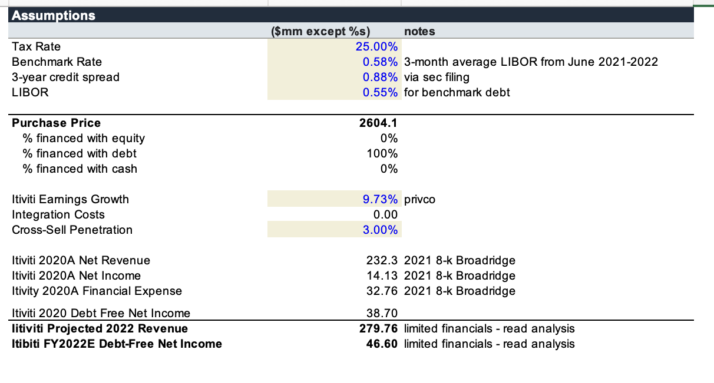
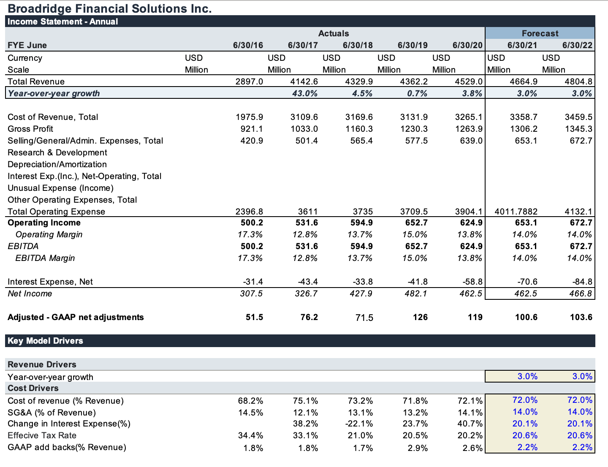
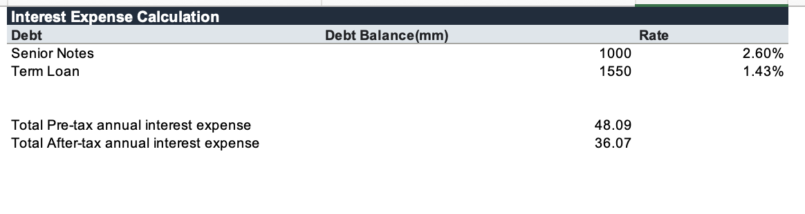
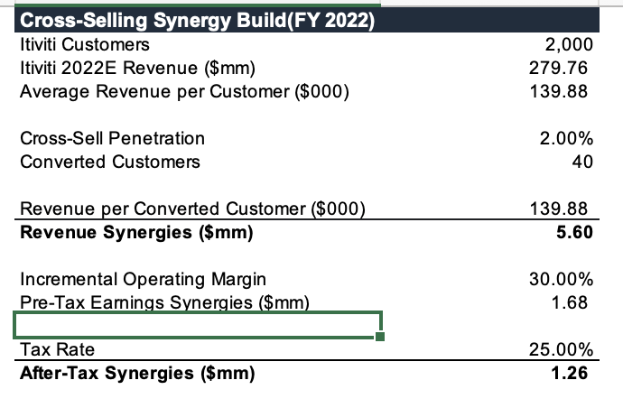
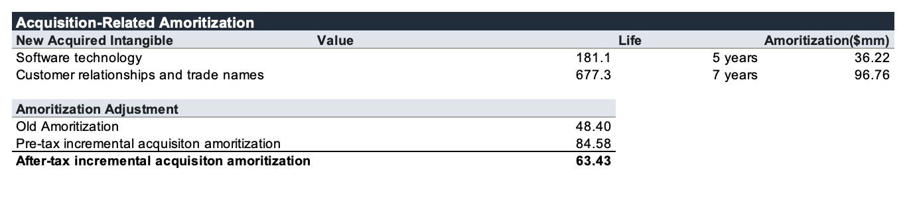
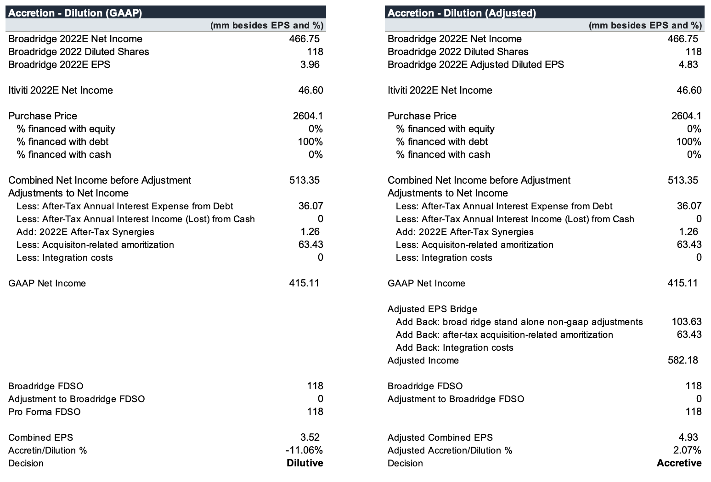

The EPS Impact of Broadridge’s Itiviti Acquisition
After scouring the internet for recent tech transactions I could run an accretion/dilution analysis on, I came across a tech transaction advised by Houlihan Lokey. Broadridge, which sells technology to banks, brokerages, and other financial companies, acquired Itiviti, which has technology used by financial institutions to route orders and manage execution. Broadridge was strongest in post-trade processing and settlement, while Itiviti was stronger in front-office order management and execution.
After reading the press release, I decided to do an accretion/dilution model. The reasons were obvious. Broadridge expected the acquisition to be accretive in the first full year. I read this and thought… may as well test it. Management also expected the acquisition to contribute approximately two percentage points to adjusted EPS CAGR through FY2023. Cross-selling was heavily emphasized, and Broadridge financed the transaction using $2.55B of debt. I was interested to see whether the interest on the $2.55B, among other costs, would cause the transaction to become dilutive.
The financing consisted of a $1.0B term loan due 18 months after borrowing and a $1.55B term loan due three years after borrowing. Furthermore, management expected the transaction to be accretive to adjusted EPS, which excludes acquisition-related amortization and certain transaction costs. On a GAAP basis, the outcome could be very different. Because of this, I calculated the transaction’s EPS impact on both a GAAP and adjusted basis.
The reason I chose this transaction despite its relatively old age is that Broadridge published pro forma financials for the transaction. Therefore, I could use them as a reference point throughout the model. There are some major nuances with how Broadridge prepared its pro forma financials. For one, it did not project future results and instead showed historical combined results as if the transaction had closed on July 1, 2019. For my model, I used FY2022 because it was the first full fiscal year after the transaction closed. Secondly, Broadridge’s pro forma excluded synergies and integration costs, while my model includes a separate synergy assumption and an integration-cost line. This makes my model more forward-looking.


My accretion/dilution model required a projected year of Itiviti’s net income. I had to take a bunch of roundabout shortcuts to project this. Based on PrivCo and the limited historical data available, I estimated that Itiviti grew revenue at approximately 9% annually. I found Itiviti’s FY2020 net income in a 2021 Broadridge 8-K. Unfortunately, I could not find enough additional data to determine how Itiviti’s margins changed through the years. Therefore, I assumed constant margins. I am aware that this is not a great assumption, but I chose to use it for the purposes of learning and because the available disclosure gave me few better options. I also had to project Broadridge’s standalone net income in FY2022 as if the transaction had not occurred. To do this, I pulled several years of historical financials and projected Broadridge forward two years. A lot of the underlying assumptions were already fairly stable, so I will not dive too deeply into this part. All that matters is that I projected FY2022 standalone net income of approximately $466.8M.
One part of the model worth discussing is how I projected adjustments to GAAP net income as a percentage of revenue. This was a tricky problem, and I believe I solved it in a slightly unorthodox way. Because I wanted to compare GAAP EPS with adjusted EPS, I needed separate standalone GAAP and company-defined adjusted earnings estimates. I came up with a GAAP net income figure that I was comfortable with, but adjusted net income was much harder to determine. MergerMarket, the database I used, did not provide historical company-defined GAAP-to-adjusted earnings reconciliations. Therefore, I found Broadridge’s reported adjusted net income for four historical years, usually in annual earnings releases or 8-K exhibits, subtracted the listed GAAP net income, and came up with a net-adjustments figure. I then calculated those net adjustments as a percentage of revenue so I could project them into the future. Although this is a strange maneuver, it seems defensible enough and really helps the model run. I debated projecting every individual adjustment separately, but this proved difficult because every year contained different add-backs. COVID-related expenses, for example, appeared in 2020 but clearly should not be projected indefinitely. I’m not too sure how commonplace this exact approach is, but I’m rolling with it.

Recall from earlier that there were two debt tranches used to finance the transaction. The $1.0B term loan was immediately refinanced with senior notes carrying a 2.60% fixed interest rate. Taking this into account, I calculated approximately $36M of total after-tax annual acquisition interest expense. This represents more than two-thirds of Itiviti’s projected net income, making the financing burden one of the largest drivers of the model.

Because management highlighted cross-selling but did not quantify synergies, I built my own revenue-synergy estimate. I assumed that 2% of Itiviti’s approximately 2,000 customers adopted an incremental Broadridge product. I then used projected revenue per customer and a 20% incremental operating margin to estimate the earnings contribution. This produced approximately $0.8M of after-tax FY2022 synergies. The assumption is intentionally conservative and remains the least certain component of the model.
This is probably the model I am least proud of but learned the most from. Standalone earnings for both companies had to be forecasted, which proved especially difficult for Itiviti because of its limited financial disclosures. This forced me to make a ton of assumptions, and a few parts still feel awkward. It was difficult at every turn to decide whether to use Broadridge’s historical combined pro forma results, Itiviti’s limited historical financials, or my own forward projections. I had to be scrappy with the calculations because the transaction disclosures were detailed in some areas, such as purchase accounting and financing, but extremely limited in others, particularly Itiviti’s standalone operating history. However, I am glad I still created the model and am proud of what I learned. Accretion/dilution is incredibly sensitive to the debt schedule, tax effects, synergies, and amortization assumptions.


In my model, acquisition-related amortization causes the transaction to be meaningfully dilutive on a GAAP basis. On an adjusted basis, Broadridge’s standalone non-GAAP adjustments and the add-back of incremental acquisition-related amortization push the transaction into modest accretion. That difference is the entire reason management can accurately describe the transaction as adjusted-EPS accretive even though the GAAP result looks much worse.
I also learned a ton about accounting in general. The goodwill deep dive took me down a massive internet rabbit hole involving purchase-price allocation, identifiable intangible assets, amortization, and goodwill impairment. I also read about Tyco, a company that went on an enormous acquisition spree and used aggressive acquisition accounting as part of a much larger accounting scandal. There is much more to the story than that, but the part that stuck with me was how the allocation of purchase price between assets and goodwill can materially affect future depreciation, amortization, and reported earnings. It seems like intangible assets are a complex but crucial part of business valuation. They are not just random balance-sheet entries added after a transaction. The assumptions made during purchase-price allocation directly affect how profitable the acquisition appears for years afterward.